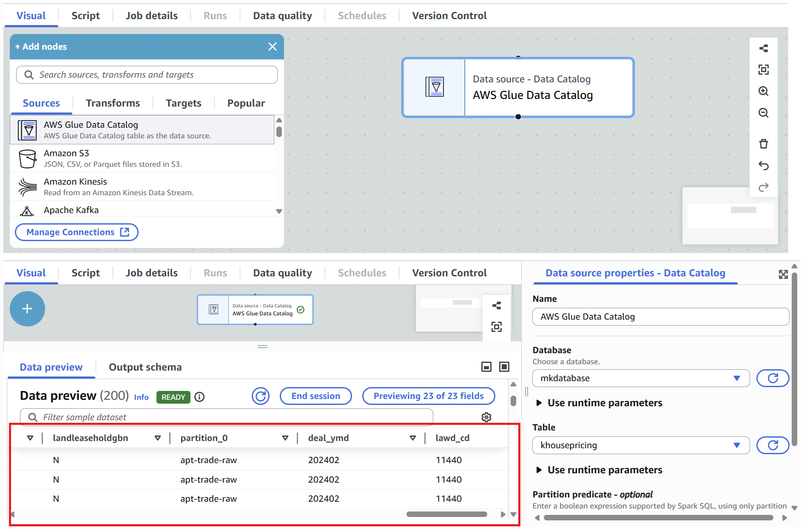

In this project, we introduce a cloud-based data pipelining using AWS. We collect “Korean housing price” data from a public API (https://apis.data.go.kr/1613000/RTMSDataSvcAptTrade/getRTMSDataSvcAptTrade?LAWD_CD=11110&DEAL_YMD=202407&serviceKey=…..) and store the raw data in an ‘S3’ data lake storage. Using Python scripts running on AWS ‘EC2’ (computing resource), we process the data — for example, deriving building prices — and send the results back to ‘S3’.
The pipeline then performs ETL operations using AWS ‘Lambda’ for lightweight tasks and AWS ‘Glue’ for larger-scale processing. The cleaned and transformed data is stored in a separate ‘S3’ bucket. We register the processed data in the AWS ‘Glue Data Catalog’ so it can be queried directly with AWS ‘Athena’ using SQL.
In parallel, we load a structured version of the data into AWS ‘Redshift’ as our data warehouse to support downstream analytics. For visualization and reporting, we use AWS ‘QuickSight’ to connect to ‘Redshift’ and generate dashboards and insights.
Once this pipeline is in place, it can easily be extended — for example, by adding new API sources or additional transformation steps. While the current pipeline is not yet fully automated, we plan to orchestrate the workflows using Apache Airflow so it can run on a daily, hourly, or monthly basis.
Step 01. Data Collection
First, we develop an API integration to retrieve real-time housing price data using a secured API key. The API data ingestion can be facilitated using the software “Postman.com” for testing and validation. Once the HTTP requests return the data, we collect and store the raw responses in AWS S3 data lake for further processing.
API Scraping Examples: fetching XML data using API Call with key-based authentication - The sample result shows 10 records in each page and 60 items in total.
In AWS, we first create an S3 bucket and a designated folder to store the raw data. The following Python script is used to retrieve data from the API and perform initial processing. By “processing the raw data,” it mainly mean extracting the required columns from the XML response and uploading the collected dataset to the S3 data lake.
Code
######################################################################################## function 00def processing_datas(root):""" data structure [{transaction #1}, {transaction #2}] """ list_temp =list()for item in root.iter("item"): dict_item = {"sggCd": item.find("sggCd").text,"umdNm": item.find("umdNm").text,"aptNm": item.find("aptNm").text,"jibun": item.find("jibun").text,"excluUseAr": item.find("excluUseAr").text,"dealYear": item.find("dealYear").text,"dealMonth": item.find("dealMonth").text,"dealDay": item.find("dealDay").text,"dealAmount": item.find("dealAmount").text,"floor": item.find("floor").text,"buildYear": item.find("buildYear").text,"cdealType": item.find("cdealType").text,"cdealDay": item.find("cdealDay").text,"dealingGbn": item.find("dealingGbn").text,"estateAgentSggNm": item.find("estateAgentSggNm").text,"rgstDate": item.find("rgstDate").text,"aptDong": item.find("aptDong").text,"slerGbn": item.find("slerGbn").text,"buyerGbn": item.find("buyerGbn").text,"landLeaseholdGbn": item.find("landLeaseholdGbn").text } list_temp.append(dict_item)return list_temp#: pip install requests ######################################################################################## function 01def get_apt_trade_from_api(service_key: str, lawd_cd: str, deal_ymd: str):import xml.etree.ElementTree as ETimport requests list_result =list() num_of_rows =50 page_no =1whileTrue: end_point_url = ("http://apis.data.go.kr/1613000/RTMSDataSvcAptTrade/getRTMSDataSvcAptTrade?"f"serviceKey={service_key}&LAWD_CD={lawd_cd}&DEAL_YMD={deal_ymd}"f"&numOfRows={num_of_rows}&pageNo={page_no}") response = requests.get(end_point_url) root = ET.fromstring(response.text) total_count =int(root.find("body/totalCount").text)# 2. data processing list_result += processing_datas(root)# Paginationiflen(list_result) >= total_count:break page_no +=1return list_result#: pip install jsonlines######################################################################################## function 02def save_file(content, file_name, file_type):""" data structure { transaction #1 info } { transaction #2 info } ... { transaction #n info } """import jsonlinesif file_type =="json":with jsonlines.open(file_name, "w") as f: f.write_all(content)#: pip install boto3######################################################################################## function 03def upload_to_s3(file_name, bucket_name, object_name):from botocore.exceptions import NoCredentialsErrorimport boto3 s3_client = boto3.client("s3")try: s3_client.upload_file(file_name, bucket_name, object_name)except NoCredentialsError:print("Cannot found AWS permission.")###################################################################################################################################################################################################: pip install python-dotenv #> Notice: create ".env" file in advance and save our SERVICE_KEY from the API (for security reason..) ##################################################################################################################################################################################################def main():# prepare to bring your SERVICE_KEYfrom dotenv import load_dotenvimport os# set the variable for SERVICE_KEY load_dotenv()# bring ur service key service_key = os.getenv("SERVICE_KEY")# output formatting file_type ="json" bucket_name ="khousepricing"# bring essential "key" and "value" as listed in the API document list_LAWD_CD = ["11110"# AREA_1 , "11140"# AREA_2 , "11170"# AREA_3 , "11200"# AREA_4 , "11215"# AREA_5 , "11230"# AREA_6 , "11260"# AREA_7 , "11290"# AREA_8 , "11305"# AREA_9 , "11320"# AREA_10 , "11350"# AREA_11 , "11380"# AREA_12 , "11410"# AREA_13 , "11440"# AREA_14 , "11470"# AREA_15 , "11500"# AREA_16 , "11530"# AREA_17 , "11545"# AREA_18 , "11560"# AREA_19 , "11590"# AREA_20 , "11620"# AREA_21 , "11650"# AREA_22 , "11680"# AREA_23 , "11710"# AREA_24 , "11740"# AREA_25 ]for DEAL_YMD in ["202401"]:for LAWD_CD in list_LAWD_CD: file_name =f"{DEAL_YMD}_{LAWD_CD}_result.json" object_name =f"apt-trade-raw/DEAL_YMD={DEAL_YMD}/LAWD_CD={LAWD_CD}/result.json"# 1. fetch raw data from API trade_result = get_apt_trade_from_api(service_key, LAWD_CD, DEAL_YMD)# 3. data processing save_file(trade_result, file_name, file_type)# 4. save it as a file and store it in S3 datalake upload_to_s3(file_name, bucket_name, object_name)if__name__=="__main__": main()
API Scraping Results: raw data DEAL_YMD=202401/ delieverd by code “mycode.py”
Note that, we create new file and name it as .env to store sensitive service keys as shown below that should not be hard-coded in the script.
SERVICE_KEY= xxxxxxx
This is retrieved by service_key = os.getenv(“SERVICE_KEY”) in the code.
Step 02. EC2 instance
DEAL_YMD=202401/, DEAL_YMD=202402/, DEAL_YMD=202403/,… Now we’re running the code on the AWS EC2 instance. To launch the instance, we selected:
Operating System: Ubuntu 24.04 LTS (HVM)
Instance Type:t3.small (2 vCPUs, 2 GiB memory)
Key Pair: Created to enable secure SSH access
Since we are using a Windows laptop, we generated the key pair in “.ppk” format to use PuTTY. After completing the setup, we can see the new instance running in the AWS Management Console.
EC2 instance in the AWS Management Console
To access the instance, first retrieve its public IP address and establish a connection between our local device and the EC2 instance on the AWS remote server (using PuTTY). Before proceeding, we verify that the instance’s security group allows inbound SSH traffic. If SSH is not enabled, we add a new inbound rule to allow “SSH access” to the server. Because our local device runs Windows, we use PuTTY to establish the connection.
Next, we open a new PUTTY terminal window specifically for transferring all necessary files in the local device to the AWS EC2 instance using the pscp command, while keeping the PUTTY terminal connected to the AWS server.
For PuTTY users on Windows, 1)Open PuTTY. 2)Go to Session and Enter the Host Name as “public IP” ubuntu@16.170.170.76 for example. Finally, go to Connection to SSH and in Auth: Browse and select key file:“.ppk” that was offered by AWS EC2 instance.
On the EC2 instance, we will set up a Python 3 environment. To prepare for this, go back to our local terminal and first generate a requirements.txt file that contains all Python packages required to run the script mycode.py.
pip freeze > requirements.txt
The following is to securely transfer the necessary files from the local machine to the EC2 instance (PuTTY):
Note that in the example above: ubuntu@172.31.7.42 = house number inside the gated community (Private IP of EC2 instance) and ubuntu@16.170.170.76 = street address that the whole world can use to find you (Public IP of AWS)
In PUTTY terminal (using EC2 instance), we run “mycode.py” to store the raw data into the S3 data lake.
Check what’s inside: ls -lrt
install: sudo apt install python3-pip
update: sudo apt update
create a virtual ENV 1: python3 -m venv ~/.venvs/myproj
create a virtual ENV 2: . ~/.venvs/myproj/bin/activate
Now, return to the S3 bucket and verify that the raw data has been successfully uploaded.
Raw (JSON) data stored in S3 data lake using the file “mycode.py”
Step 03. ETL
When we want to process raw data stored in S3 (or other sources), clean it, transform it, and load it somewhere else (like S3, RDS, Redshift, DynamoDB), AWS gives us two options.
AWS Lambda: Good for lightweight, event-driven ETL
AWS Glue: Managed ETL service for larger workloads
In this project, we focus on executing large-scale ETL using AWS Glue. As the initial step, we build a Glue Data Catalog by running a Glue Crawler, which automatically infers table schemas from the raw data. To configure the Crawler, we add the data source by connecting to the S3 bucket through the AWS Console. The Crawler then scans the data, identifies the structure, and creates the corresponding table schemas and partitions.
A Glue Data Catalog is ready for efficient processing of large-scale datasets.
Crawler created a Data Catalog

Raw tables drawn from a Data Catalog
In short,
Source (to fetch): S3
Transform: SQL queries
Targets (to save): S3
Moving on to the ETL process, we use SQL queries to clean and standardize the raw data. This includes renaming columns, converting string values to numeric types (e.g., float or integer), removing unnecessary commas, and replacing null values with zero. The SQL queries used here are presented as below.
In AWS Athena, we can make SQL analysis directly on data stored in Amazon S3 without the need to set up a database or server infrastructure. Athena allows us to query structured, semi-structured, or raw data using standard SQL, making it a powerful tool for exploratory data analysis and validation after ETL processes.